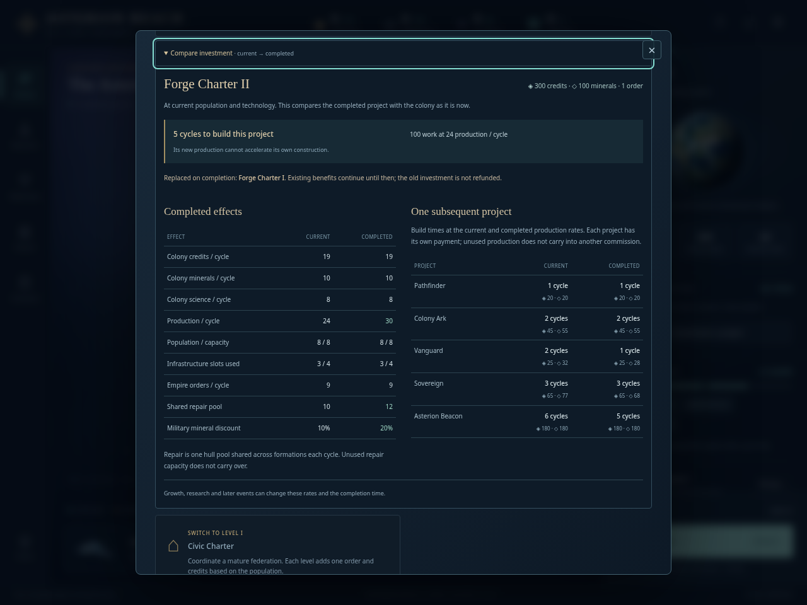
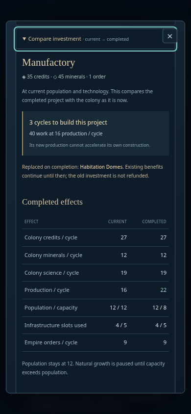
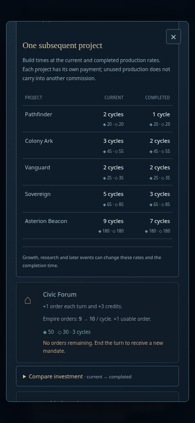

ASTERION REACH · STAGE17 · INDEPENDENT ACCEPTANCE
See what an investment changes
ForgeII takes five cycles to build at24 production. Once completed,30 production makes a Vanguard a one-cycle commission instead of two. The comparison keeps those two commitments distinct.
No blocker found. Optional disclosures preserve quick commissioning, current costs and structural requirements. All review fixtures are synthetic; no ongoing WATCH files or hidden campaign state were accessed.
12Projection cases, including two ordinary completion oracles
5Initial UI behavior cases, source-attributed
2Final desktop/mobile layout and keyboard cases
A complete desktop comparison

1280px final layout. The project name and price remain visible with completed effects and all five subsequent-project comparisons.Population survives reduced capacity

390px, reduced motion. Replacing Habitation Domes keeps12 citizens above the new8-capacity growth limit.
Throughput stacks below the effects. Native disclosure, scrolling and the close control remain usable.What the independent checks establish
- Old production pays for the investment through its completion cycle. New income is first collected on the following cycle.
- Replacing supporting infrastructure includes the whole lost charter; removing a shipyard marks ship construction unavailable.
- Population is retained when capacity falls; order caps, science modifiers and faction rounding use existing rules.
- Local hostile presence is separated from nominal repair capacity. Distant rival fleets and economies do not influence the comparison.
- Inspection preserves all saved fields and RNG. One ordinary quick commission matched the complete expected command state.
- Disabled purchases retain accessible comparisons; native Space/Enter and Escape work without hidden orders or mandatory confirmations.
The final presentation changed only investment-ui.js and investment.css. The initial five UI checks retain their original source fingerprints; they are not represented as rerun. Two final checks cover the widened desktop and stacked mobile layout.
Evidence: projection results · first UI phase · final layout phase · hash manifest · method, harness correction and reproduction.
Core commit077578f. This is a current-conditions comparison, not a growth/research simulator, guaranteed schedule, automatic recommendation or campaign difficulty measurement.